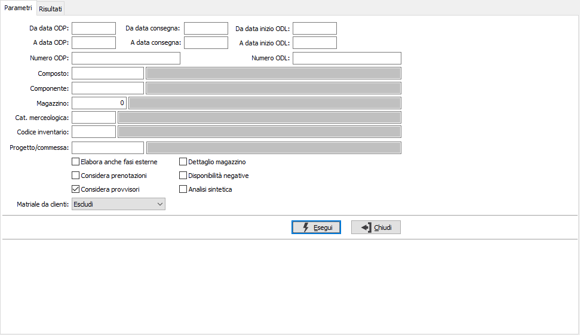
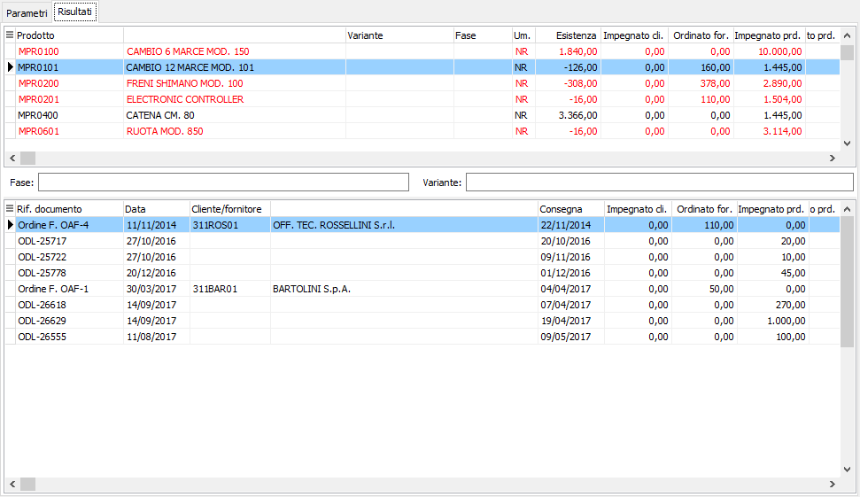

Analisi approvvigionamento componenti
Il programma consente di analizzare l’andamento della disponibilità dei componenti di uno specifico ODP/ODL/progetto. L’analisi tratta tutti i movimenti di impegno (con possibilità di includere anche gli impegni derivanti da ODP provvisori), fornendo informazioni sintetiche o analitiche (su opzione) sulla disponibilità dei componenti utilizzati per la produzione.

Nei parametri di selezione è possibile impostare il singolo composto per cui analizzare i componenti o ricercarlo per ODP, ODL, categoria merceologica o codice inventario, oppure impostare direttamente il singolo componente, è possibile specificare un singolo magazzino e se considerare i progressivi provvisori risultato della generazione del piano di produzione; se attiva la gestione progetti potrà essere specificato un singolo progetto. Le opzioni consentono di includere anche le fasi esterne, di includere gli ODP provvisori ed eventuali prenotazioni; inoltre è possibile visualizzare il risultato con il dettaglio del magazzino, visualizzare solo i componenti che hanno disponibilità negative ed effettuare un'analisi sintetica. Se attivo il modulo del conto lavoro attivo è possibile escludere i materiali forniti dai clienti, includerli oppure mostrare solo i materiali forniti dai clienti.

Una volta impostati i criteri di selezione viene presentato nella griglia superiore l’elenco dei componenti: per ognuno vengono visualizzati i progressivi ed evidenziando in rosso le disponibilità negative. Se l'analisi non è sintetica viene visualizzata anche una griglia che riporta analiticamente le voci che compongono i progressivi di impegnato ed ordinato.
Dalla pagina Risultati, tramite i pulsanti presenti nella Toolbar sarà possibile effettuare la stampa.